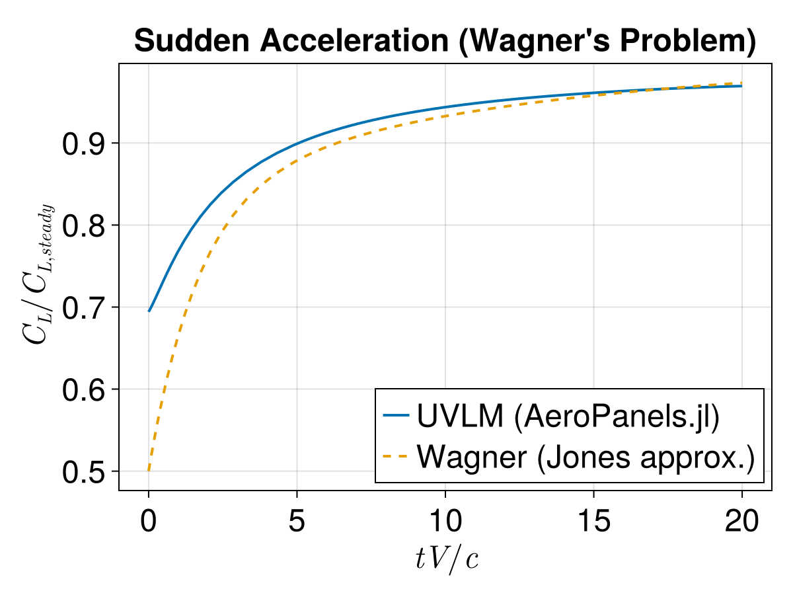

Unsteady Simulation (Wagner Problem)
This example simulates the lift buildup on a flat plate following a sudden acceleration (impulsive start), comparing the numerical result against the classical Wagner problem.
using AeroPanels
using OrdinaryDiffEqTsit5
using StaticArrays
using GLMakie1. Simulation Setup
We define a high-aspect ratio wing to approximate 2D behavior and setup the dynamics.
c, V, α = 1.0, 1.0, 2.0
surf = AeroSurface2D(10, 1, chord=(c, c), span=100.0)
props = AeroModelProperties(c=c, b=100.0, S=100.0)
model = UnsteadyAeroModel2D([surf], props, V, nWake=100)
b = NormalWash(SVector(V*cos(deg2rad(α)), 0.0, V*sin(deg2rad(α))), model)
u0 = zeros(NumberOfStates(model))
tspan = (0.0, 20.0)
function uvlm_dynamics!(du, u, p, t)
model, b = p
du .= SolveCirculation(u, b, model)
enduvlm_dynamics! (generic function with 1 method)2. Integration and Results
We use OrdinaryDiffEqTsit5.jl to solve the state-space system and extract the forces.
prob = ODEProblem(uvlm_dynamics!, u0, tspan, (model, b))
sol = solve(prob, Tsit5());3.Post-processing: Calculate lift coefficient
function FZ(Γw, vb, model)
ρ = 1.225
dvb = SVector(0.0, 0.0, 0.0) # Constant velocity
Fs, Fu = SolveForces(Γw, vb, dvb, model, ρ)
F = sum(Fs) + sum(Fu)
return F[3]
end
Q = 0.5 * 1.225 * V^2
S = props.S
vb = SVector(V*cos(deg2rad(α)), 0.0, V*sin(deg2rad(α)))
Cz_UVLM = [FZ(sol.u[i], vb, model)/Q/S for i in 1:length(sol.t)];4. Analytical Solution: Wagner's Function (Jones Approximation)
Jones Approximation of Wagners function is given by $w(s) = 1 - 0.165*exp(-0.0455*s) - 0.335*exp(-0.3*s)$
wagner(s) = 1.0 - 0.165*exp(-0.0455*s) - 0.335*exp(-0.3*s)
time_chord = sol.t ./ (c/V) # Non-dimensional time (t*V/c)
s = 2.0 .* sol.t ./ (c/V) # Wagner's s (2*V*t/c)
CL_steady = 2 * π * deg2rad(α) # Thin airfoil theory steady lift
CL_analytical = CL_steady .* wagner.(s);5. Plotting
fig = Figure()
ax = Axis(fig[1, 1],
title = "Sudden Acceleration (Wagner's Problem)",
xlabel = L"t V / c",
ylabel = L"C_L/C_{L,steady}")
lines!(ax, time_chord, Cz_UVLM/CL_steady,
label="UVLM (AeroPanels.jl)", linewidth=2)
lines!(ax, time_chord, CL_analytical/CL_steady,
label="Wagner (Jones approx.)", linestyle=:dash, linewidth=2)
axislegend(ax, position = :rb)
fig
6. Final check
println("Final CL (UVLM): ", Cz_UVLM[end])
println("Final CL (Steady Theory): ", CL_steady)
println("Error: ", abs(Cz_UVLM[end] - CL_steady)/CL_steady * 100, "%")Final CL (UVLM): 0.212616821710898
Final CL (Steady Theory): 0.2193245422464302
Error: 3.0583538289096235%
This page was generated using Literate.jl.